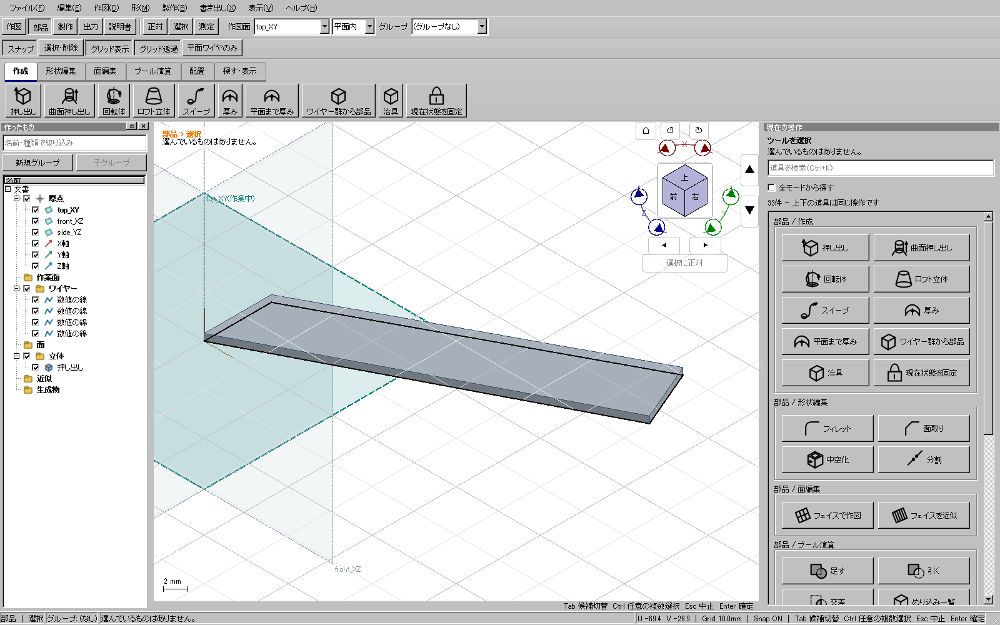
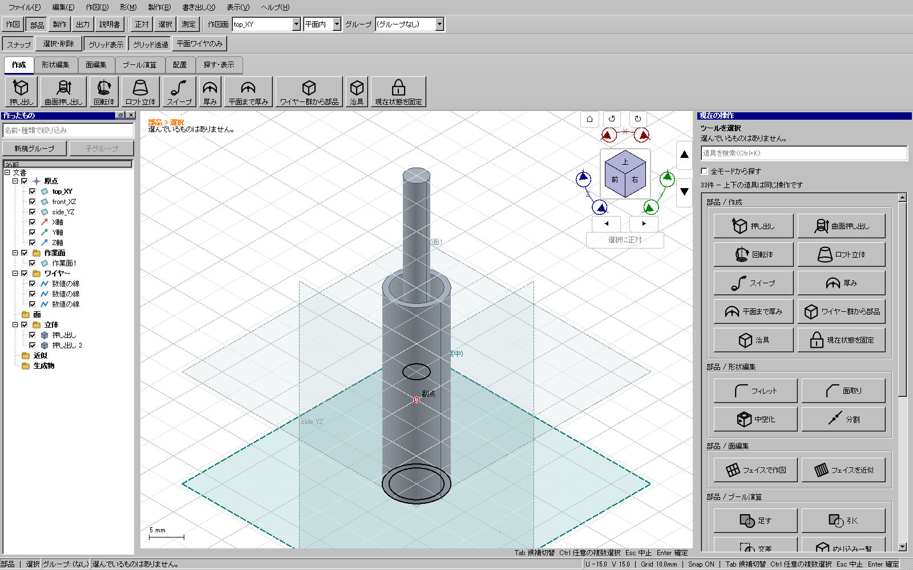
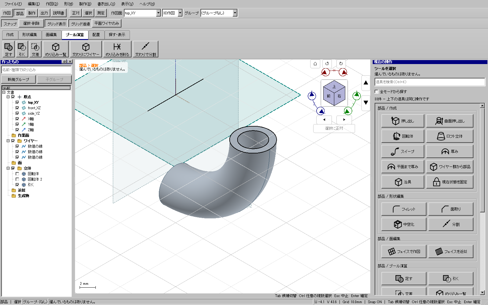
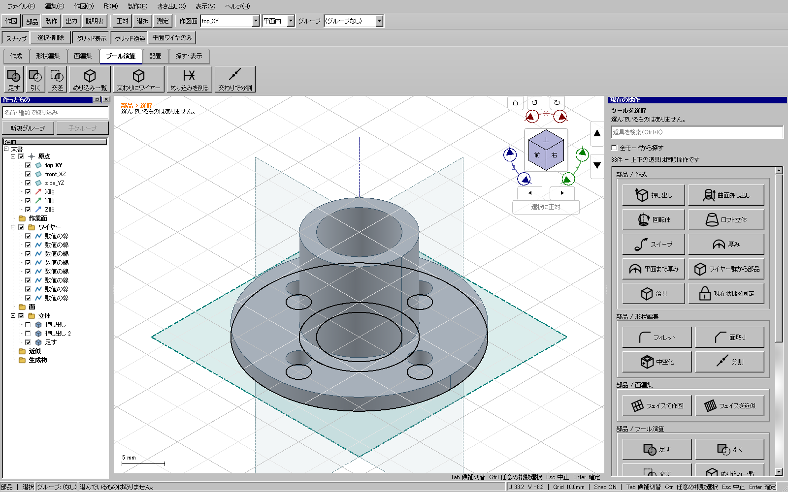
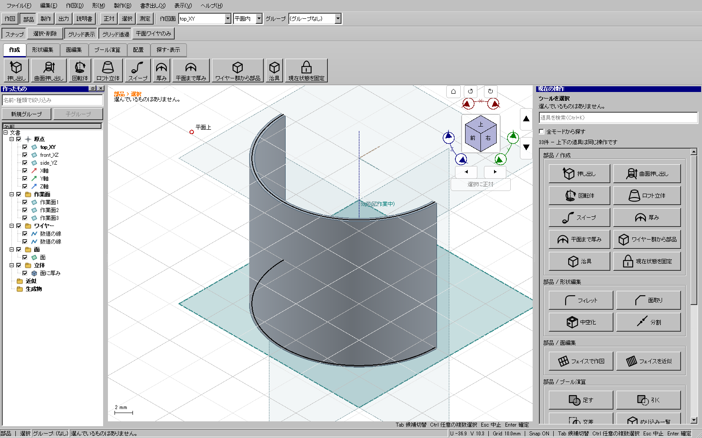
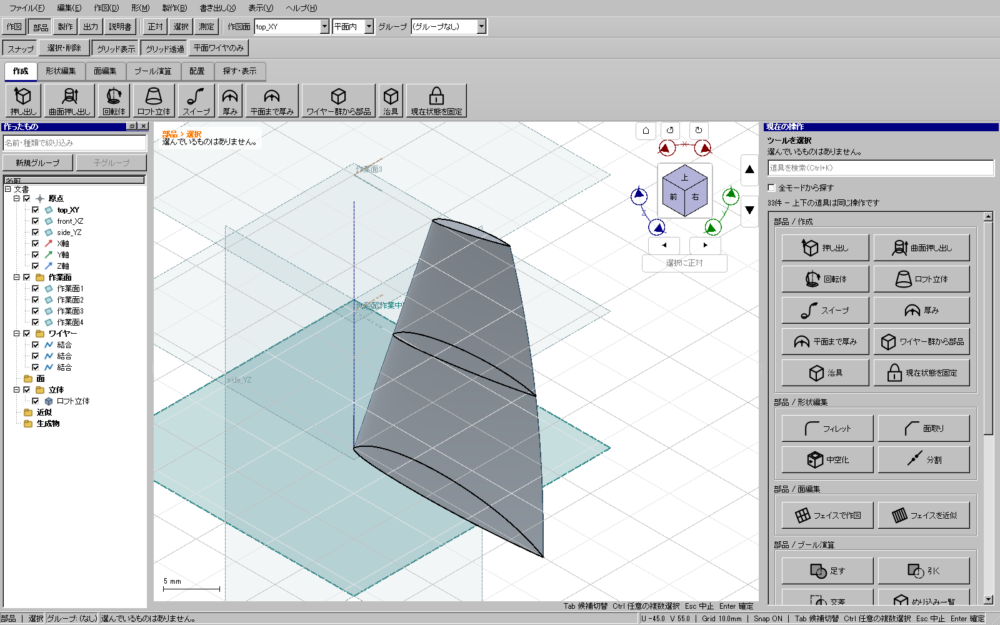
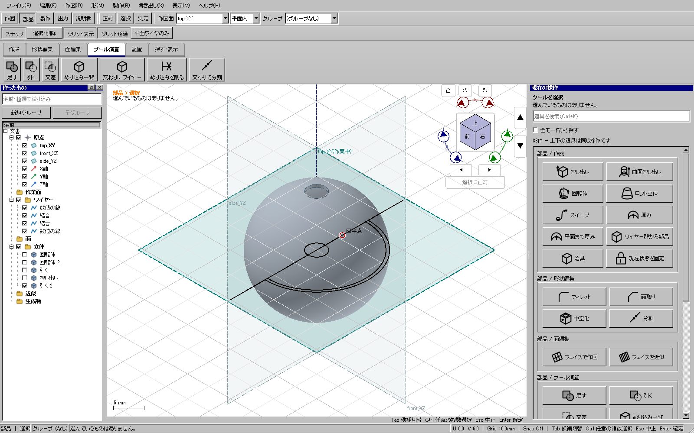
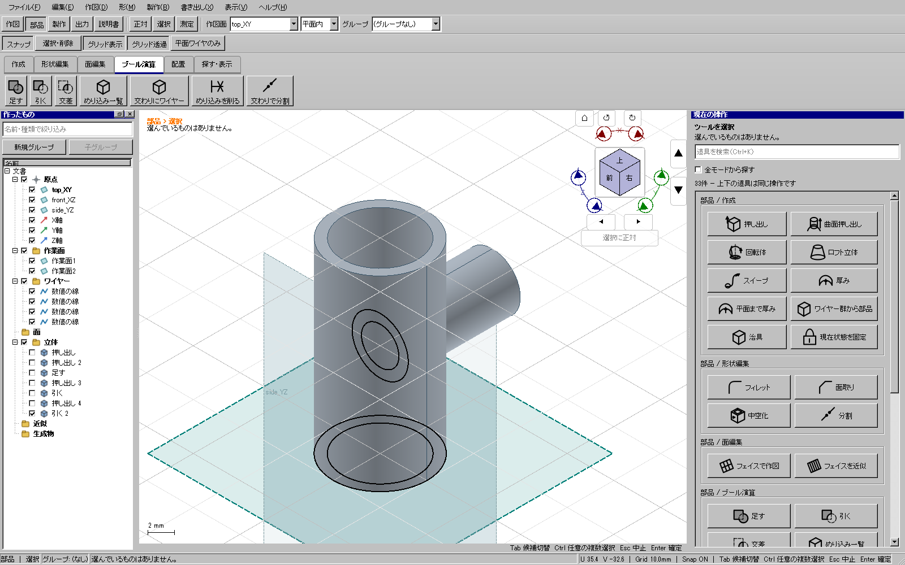
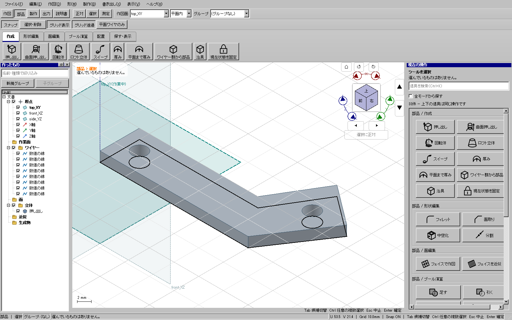

01 後退した薄い翼板
HP-EXTENDED-01

- 作図→線→座標で、上面のU/Vに (0,0)→(35,18)→(32,25)→(0,8)→(0,0) の4辺を作ります。
- 部品→押し出しを押し、4辺を通常クリックで順に追加します。最後の辺だけを再クリックで外し、もう一度追加できることも確認しています。
- 距離0.8 mmで確定します。独立計算した体積222 mm³と一致し、輪郭の外には材料がありません。
用途専用の自動生成器を使わず、既存の作図、結合、面作成、厚み、押し出し、回転体、ロフト、ブール演算で作った要素モデルです。完成した戦闘機や重機全体のモデルではありません。単位はmmです。
画像はすべて実際のWindows版CADの操作画面です。元ワイヤーを残した編集可能なKCD2を添付します。各例では入力欄、選択内容、材料と空洞、Undo/Redo、保存再読込、STEP/STL出力も試験しています。表示用の三角形メッシュを編集の正本にはしていません。
押し出し中は線上をクリックして1本ずつ追加・解除、線のない内側をクリックして領域を選べます。重なる候補はTabで送り、欄に入った対象も確認してください。作業平面上の座標入力はU/Vであり、3D座標のX/Y/Zとは区別します。
HP-EXTENDED-01

HP-EXTENDED-02

HP-EXTENDED-03

HP-EXTENDED-04

HP-EXTENDED-05

HP-EXTENDED-06

HP-EXTENDED-07

HP-EXTENDED-08

HP-EXTENDED-09

「06」の再現用です。各座標を表示されたU/V欄へ順に入力します。ベジェは4個の制御点、直線は2端点です。
| Z | 種類 | U/V座標 |
|---|---|---|
| 0 | 上側ベジェ | (24.000, 0.025) → (14.400, 3.600) → (0.480, 3.600) → (0.000, 0.000) |
| 0 | 下側ベジェ | (0.000, 0.000) → (0.480, -1.200) → (14.400, -1.200) → (24.000, -0.025) |
| 0 | 後縁直線 | (24.000, -0.025) → (24.000, 0.025) |
| 15 | 上側ベジェ | (20.841, 2.252) → (14.173, 3.713) → (4.983, 2.421) → (5.000, 0.000) |
| 15 | 下側ベジェ | (5.000, 0.000) → (5.428, -0.748) → (14.618, 0.544) → (20.848, 2.202) |
| 15 | 後縁直線 | (20.848, 2.202) → (20.841, 2.252) |
| 30 | 上側ベジェ | (17.721, 2.095) → (14.326, 2.401) → (9.844, 1.201) → (10.000, 0.000) |
| 30 | 下側ベジェ | (10.000, 0.000) → (10.258, -0.345) → (14.740, 0.856) → (17.734, 2.046) |
| 30 | 後縁直線 | (17.734, 2.046) → (17.721, 2.095) |
HP-EXTENDED-10/11は領域と線の混在選択、同じワイヤーを共有する隣接区画、区画外へ続く元辺の保全を確認する操作試験です。これらは追加の完成モデルではありません。
この例だけで、未試験の任意の形状や点断面ロフトを含む全形状への対応は保証しません。以前からの曲面・穴・複数部品・近似・出力の試験と併用します。